Une visite virtuelle du collège Sainte Ide
Touchez les plans, les photos et les portes pour entrer dans les différents lieux du collège.
Utilisez le menu en bas de l’écran pour vous déplacer : accueil, secteurs 1 et 2, retour.
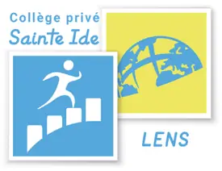
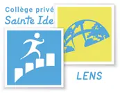
Visite virtuelle du collège Sainte Ide
Pendant la visite, vous pouvez taper sur l’icône du collège Sainte Ide présent sur chaque diapositive pour visiter le site internet du collège.
Vous pouvez aussi laisser votre avis sur le collège Sainte Ide en tapant sur le bouton.
Espérant que vous passerez un bon moment!
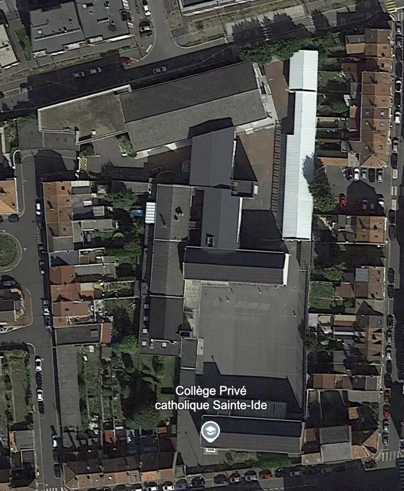
Visite guidée du collège Sainte Ide
Choisissez votre lieu de visite.
F
Les casiers
Vie scolaire
S
S
Entrée
Secrétariat
N1
N2
Resp.
niveaux
Inter2
Zola
Inter RdC
Secteurs secrétariat accueil,
Les bâtiments F - N – I - S – Z
Restaurant scolaire
Préau
Inter les étages
Entrée
Mayeux
Entrée
Lecuppre
Entrée
Faure
CDI
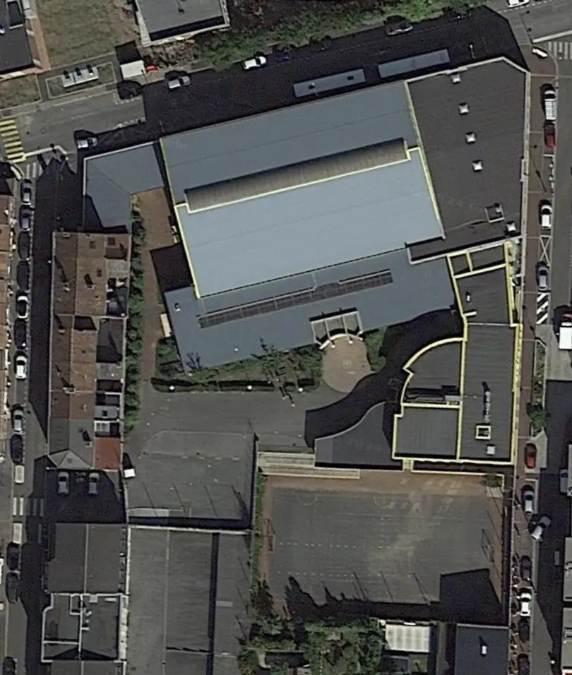
Visite guidée du collège Sainte Ide
Le secteur Complexe
Choisissez l’espace Sport Technologies - Sciences
Le gymnase
Sous-Sol
l’amphi
la salle Cézanne
Au RdC
les SVT
Au 1er étage
Les sciences physiques
Au 1er
La techno
Au RdC
La salle
Mère Térésa
La cour
Visite guidée du collège Sainte Ide
Le Centre de Documentation et d’information
Inter Rez de chaussée ou accès par la cour
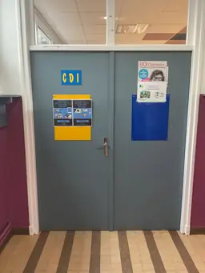
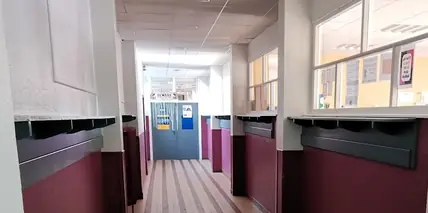
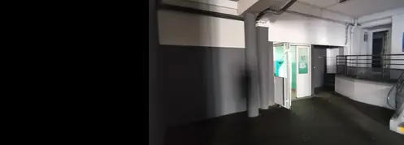
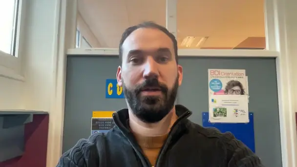
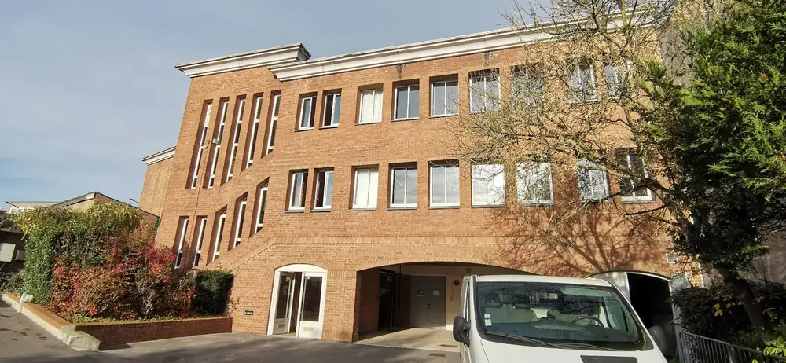
Visite guidée du collège Sainte Ide
Tapez sur la porte pour entrer
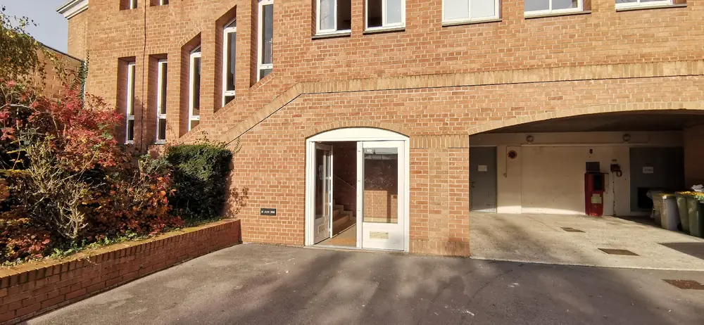
1er
étage
Le bâtiment F
2ème étage
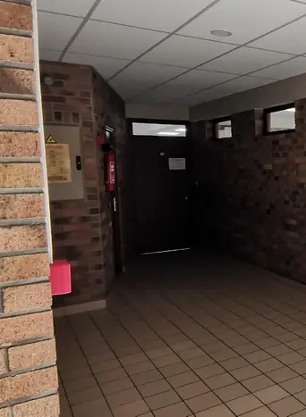
Visite guidée du collège Sainte Ide
La salle F 102
Tapez sur la porte pour entrer
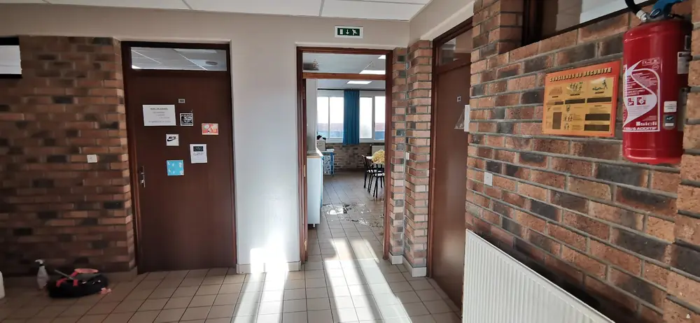
Le palier du 1er étage
Accès au 2ème étage
Tapez ici
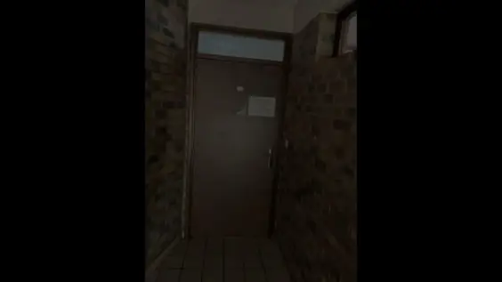
La salle F 104
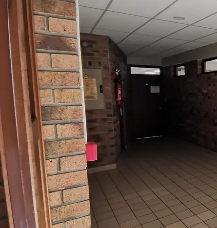
Visite guidée du collège Sainte Ide
En salle F204
Le palier du 2ème étage
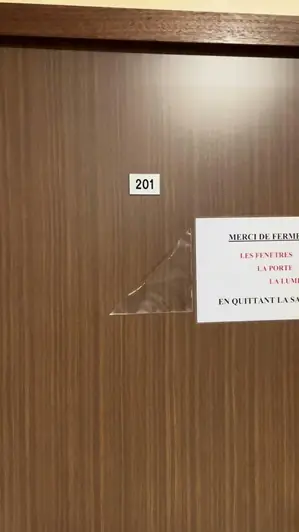
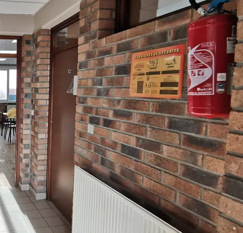
En salle F201
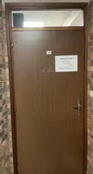
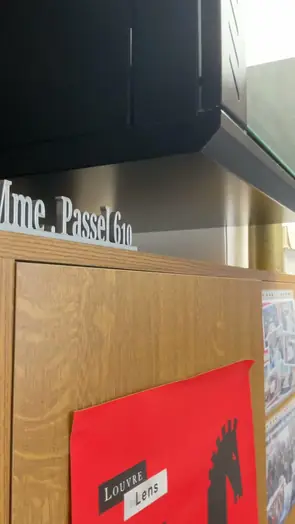
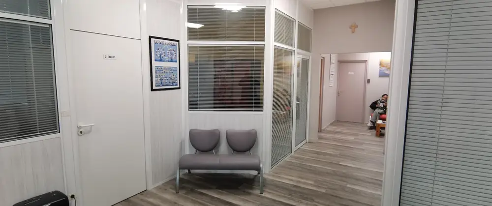
Visite guidée du collège Sainte Ide
Le secrétariat
La comptabilité
Mr Lannoy
Le secrétariat de direction
Mme Hémery
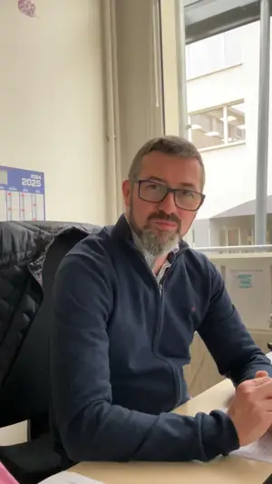
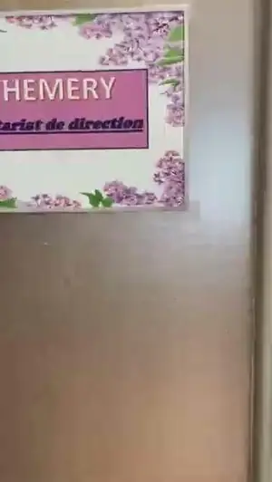
Le bureau de
Mme la directrice
Marie Ange Osseland
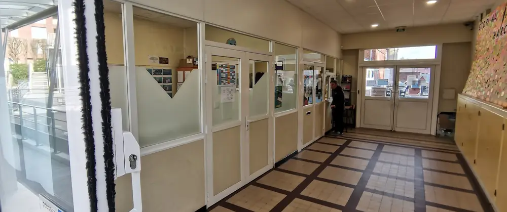
Visite guidée du collège Sainte Ide
L’accueil et le bureau du surveillant
Bureau du surveillant
Mr Renard
L’accueil
Mme Debreu
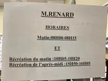
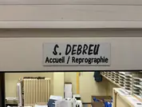
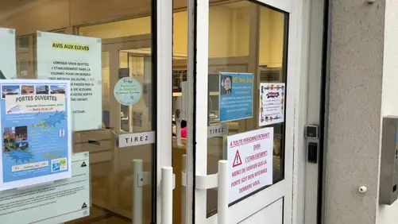
Visite guidée du collège Sainte Ide
Cours de français en salle S4
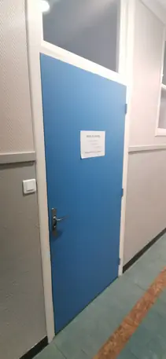
La classe chantante
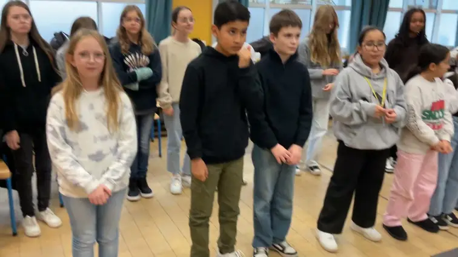
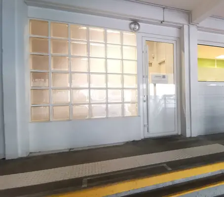
Visite guidée du collège Sainte Ide
Tapez à une porte pour entrer
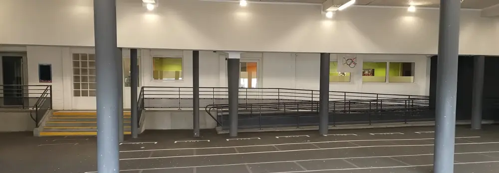
1er étage
Resp.
niveaux
Sous le préau
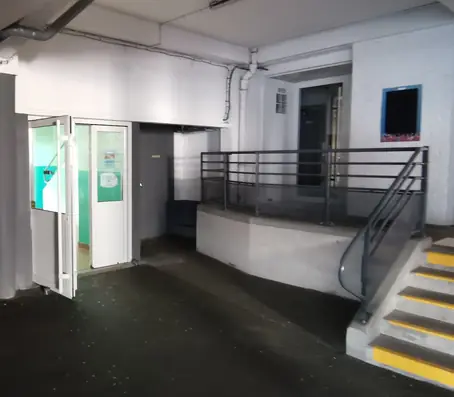
Bat.
Inter
Le restaurant scolaire
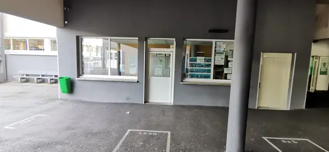
Le bureau des assistants d’éducation
L’APEL
Le bureau du personnel d’éducation surveillant